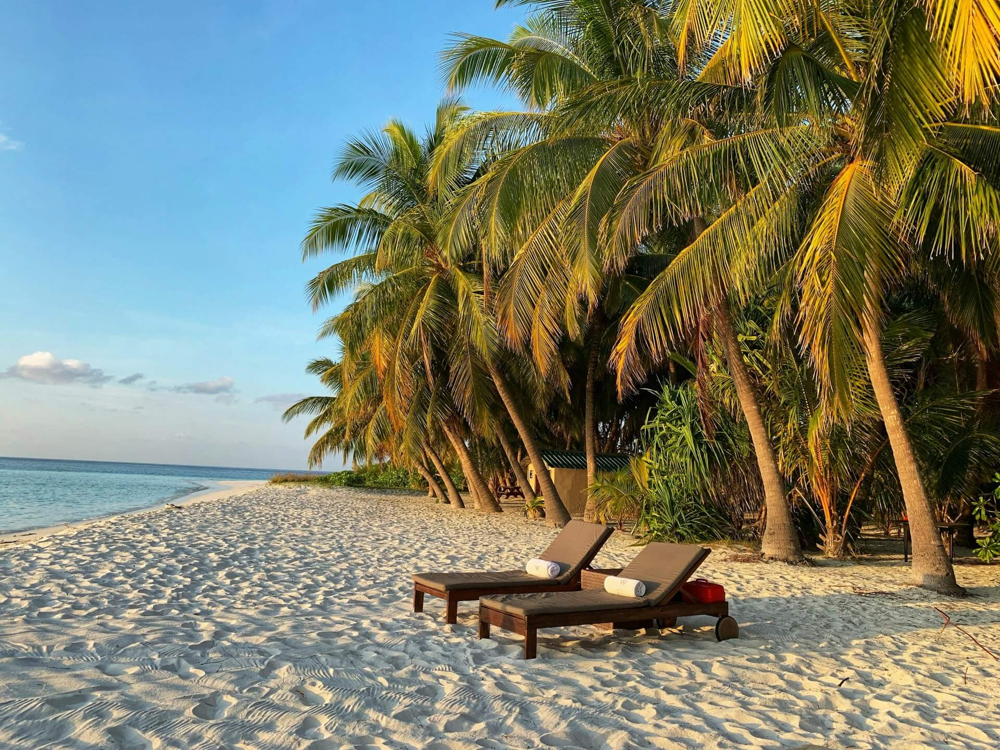

The purity of natural cold springs
Why unchlorinated, continuously flowing mineral spring water rejuvenates the mind and skin better than pool water.
Read storyNotes from the springs
Field guides, camping tips, and quiet observations from our highland sanctuary in Amadeo.
Stories & field notes
Why unchlorinated, continuously flowing mineral spring water rejuvenates the mind and skin better than pool water.
Read story
Setting up camp under the canopy, essentials to pack, and enjoying starry nights in cool Cavite weather.
Read story
Discover the coffee capital of Cavite, local food spots, and hidden scenic roads nearby.
Read story